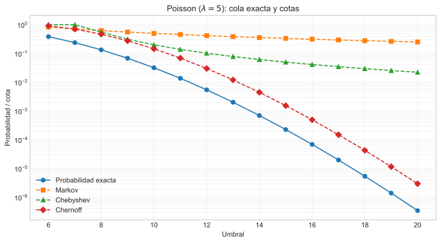

Markov
P(X ≥ a) ≤ E[X] / a
General y económica.
Desigualdades de Markov, Chebyshev y Chernoff
Usa las flechas del teclado para avanzar
Queremos controlar P(X ≥ a) sin reconstruir toda la distribución.
Las desigualdades cambian información por precisión: media, varianza o función generadora de momentos.
P(X ≥ a) ≤ E[X] / a
General y económica.
P(|X − μ| ≥ t) ≤ σ² / t²
Controla desviaciones.
P(X ≥ a) ≤ inf e−θaMX(θ)
Captura el decaimiento de la cola.
1 Si X ≥ 0, entonces X ≥ a · 1{X≥a}.
2 Tomamos esperanza: E[X] ≥ a P(X ≥ a).
3 Dividimos entre a > 0.
Aplicamos Markov a la variable no negativa Y = (X − μ)².
Para la cola superior usamos t = a − μ, con a > μ.
1 Transformamos: X ↦ eθX, con θ > 0.
2 Markov: P(X ≥ a) ≤ e−θaMX(θ).
3 Elegimos el mejor valor admisible de θ.
M(θ) = exp{λ(eθ−1)}
Para un entero k > λ:
e−λ(eλ/k)k
M(θ) = λ/(λ−θ), θ < λ
Para a > 1/λ:
λa · e1−λa


MarkovMáxima generalidad; menor precisión.
ChebyshevLa varianza mejora el control, pero la cota es bilateral.
ChernoffLa MGF captura mejor el régimen de eventos extremos.
No buscamos siempre la probabilidad exacta.
Buscamos una garantía útil.